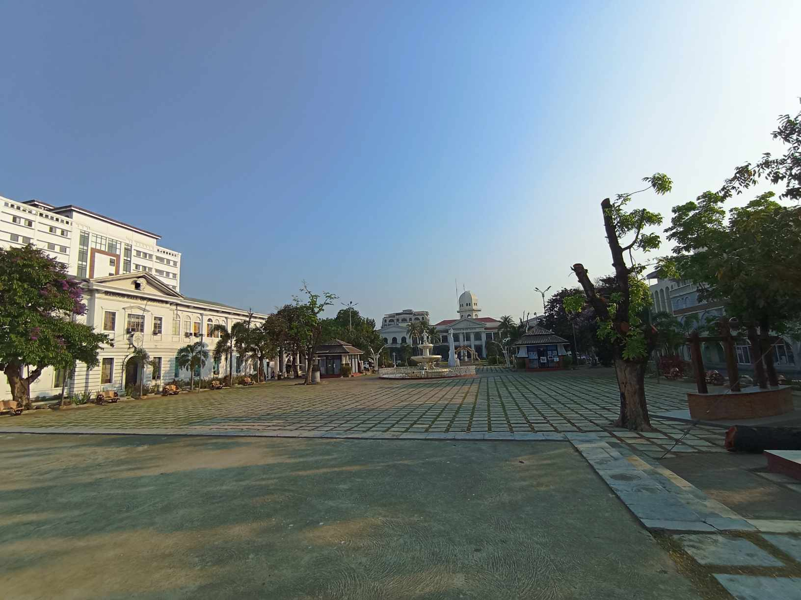
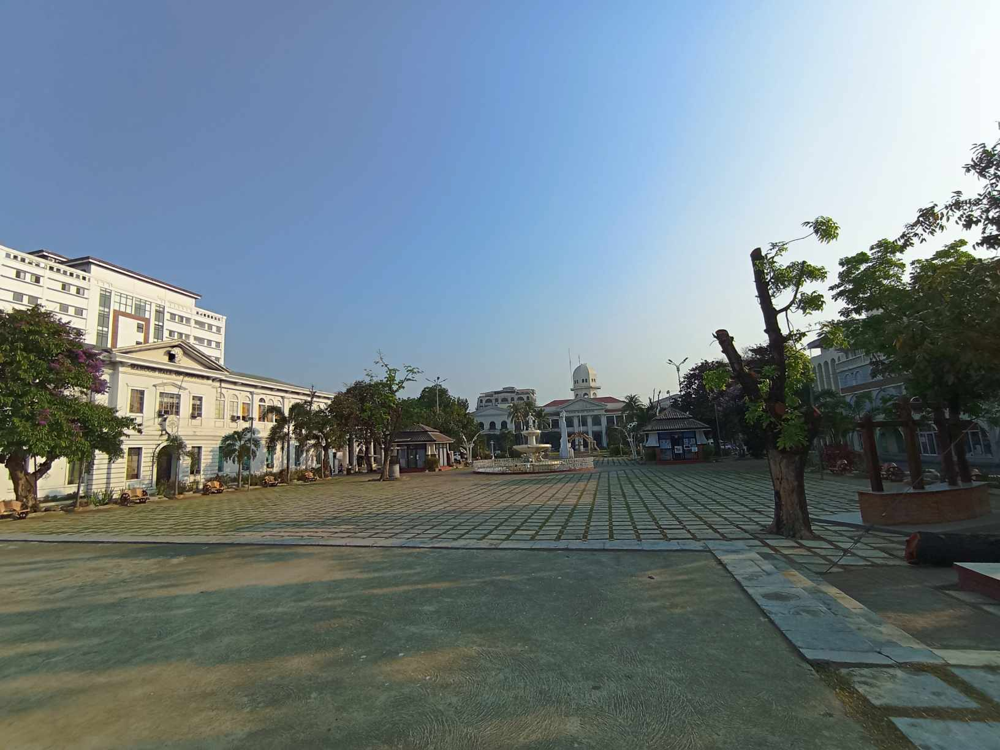

Ilocos Norte
Delve into the unique history of Ilocos Norte, which played a significant role in the tobacco industry during the Spanish colonial period. Learn about the Tobacco Monopoly, a system that shaped the economic landscape, as you visit historic sites like the Tobacco Monopoly Monument.
The distance from Manila to Ilocos Norte is approximately 450 to 500 kilometers (about 280 to 310 miles) northward, depending on your exact destination within the province. Traveling from Manila to Ilocos Norte typically takes around 8 to 10 hours by car or bus, depending on traffic conditions and the chosen route.

 



How to Get to:
The travel time from Manila to Ilocos Norte can vary depending on the mode of transportation you choose and the specific destination within Ilocos Norte. If you're traveling by car or bus, it usually takes around 8 to 12 hours to reach Ilocos Norte from Manila, depending on traffic conditions and the exact starting and ending points of your journey. If you're flying, you can take a flight from Manila to Laoag, the capital city of Ilocos Norte, which typically takes around 1.5 hours. However, you need to consider additional time for travel to and from the airports, check-in procedures, and potential delays.